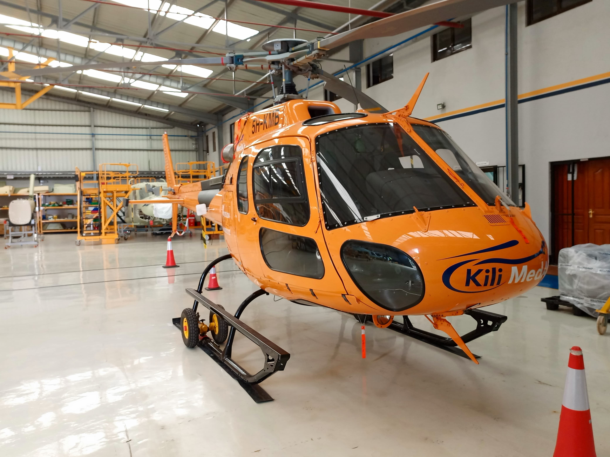
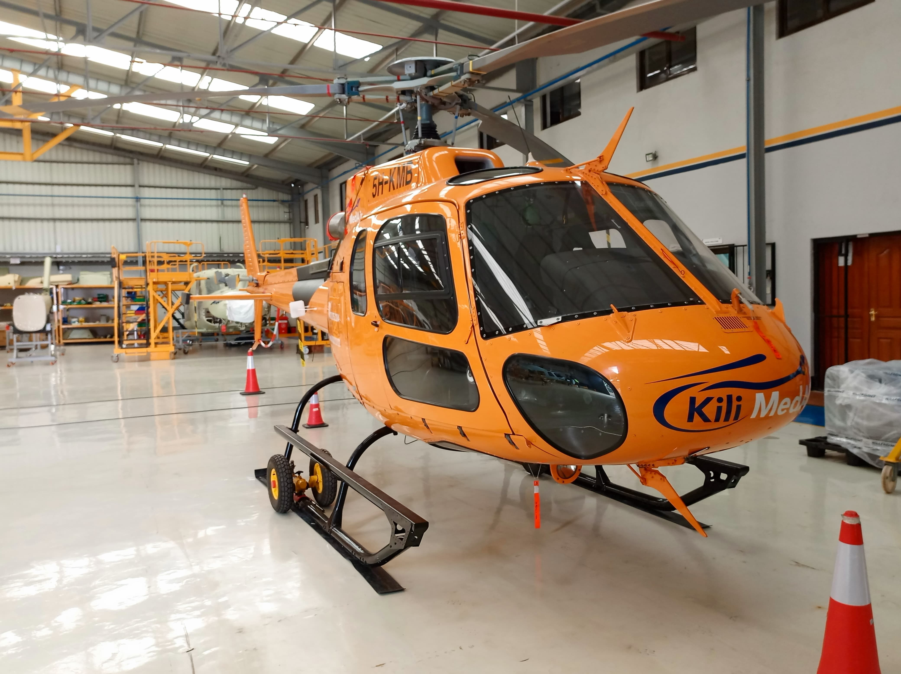
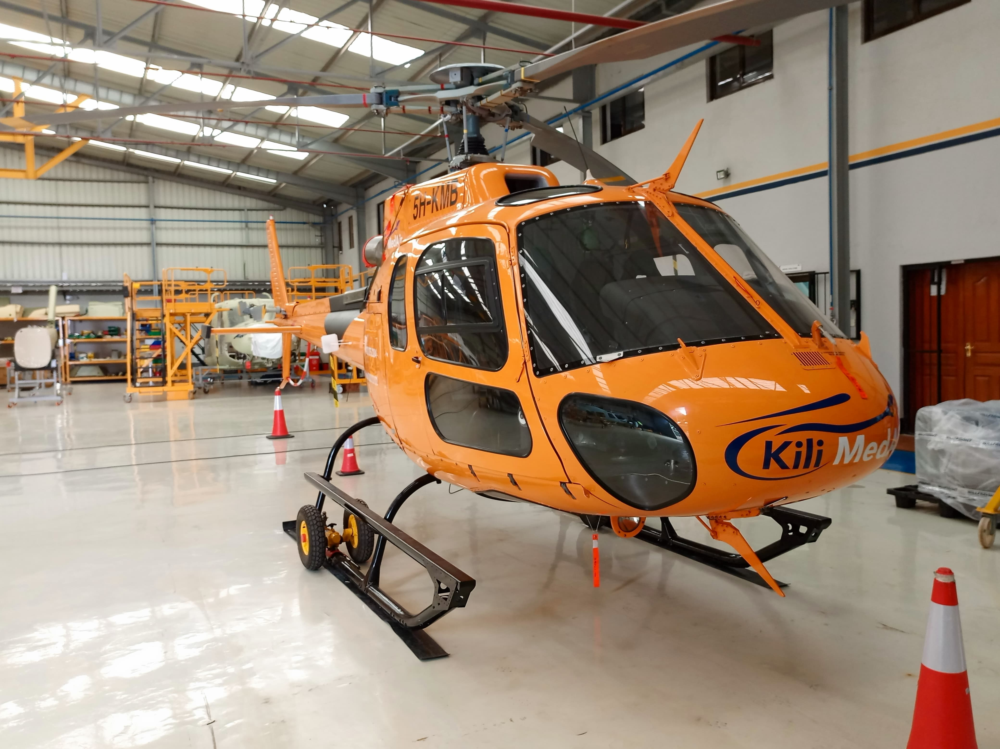

My journey into Aeronautical Engineering began with a fascination for how
complex machines stay in the air. However, it was during my studies that I
realized the true brain
of the aircraft -the Avionics- is where the most
exciting innovation happens.
I completed an internship at Helicopters International and Phoenix
Aviation Limited, where i stepped out of the classroom and onto the hangar
floor/lab. During my time there, I was responsible for battery charging,
assisting in testing flight instrumentation, removal and installation of
starter generators e.t.c. This experience taught me that great engineering
isn't just about building systems that work; it's about building systems
that are resilient, redundant and safe.
Now, as a graduate, I am looking to apply my hands-on experience in
circuit theory, maintenance, flight dynamics and control e.t.c to help
teams build the next generation of flight technology.
When I'm not diving into Circuit diagrams or Flight control and navigation
systems, you'll likely find me reading books 📕, swimming 🏊, singing while
listening to music 🎧, teaching chidren in Children's church 😇 etc.
